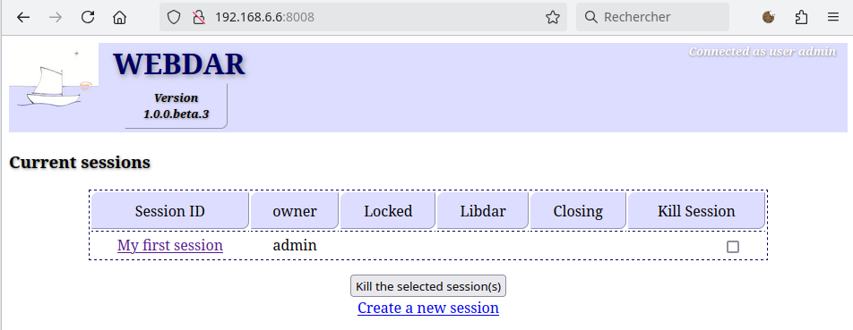
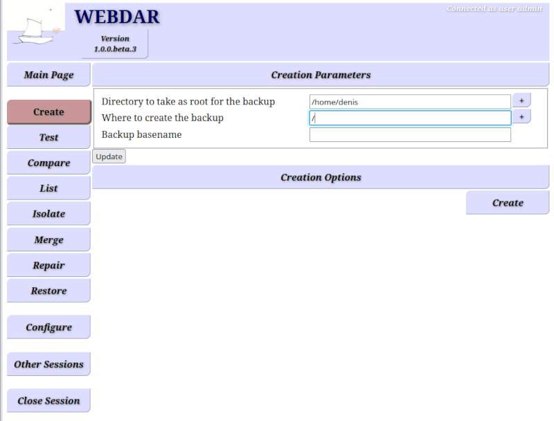
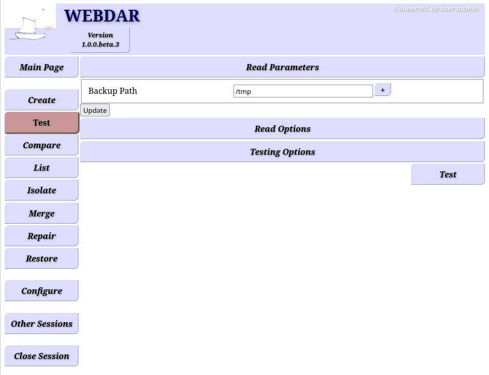
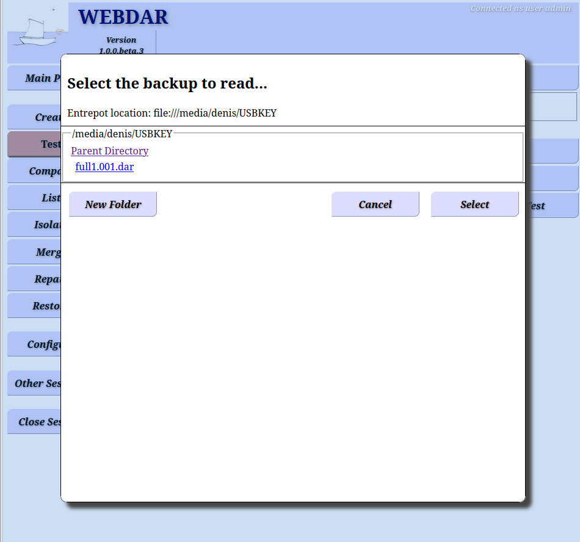
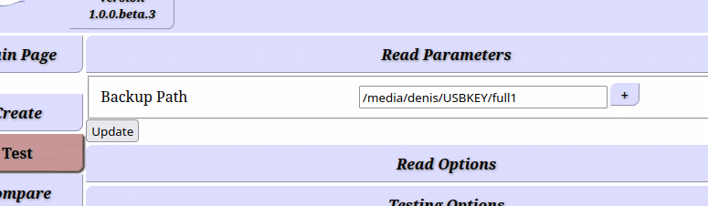
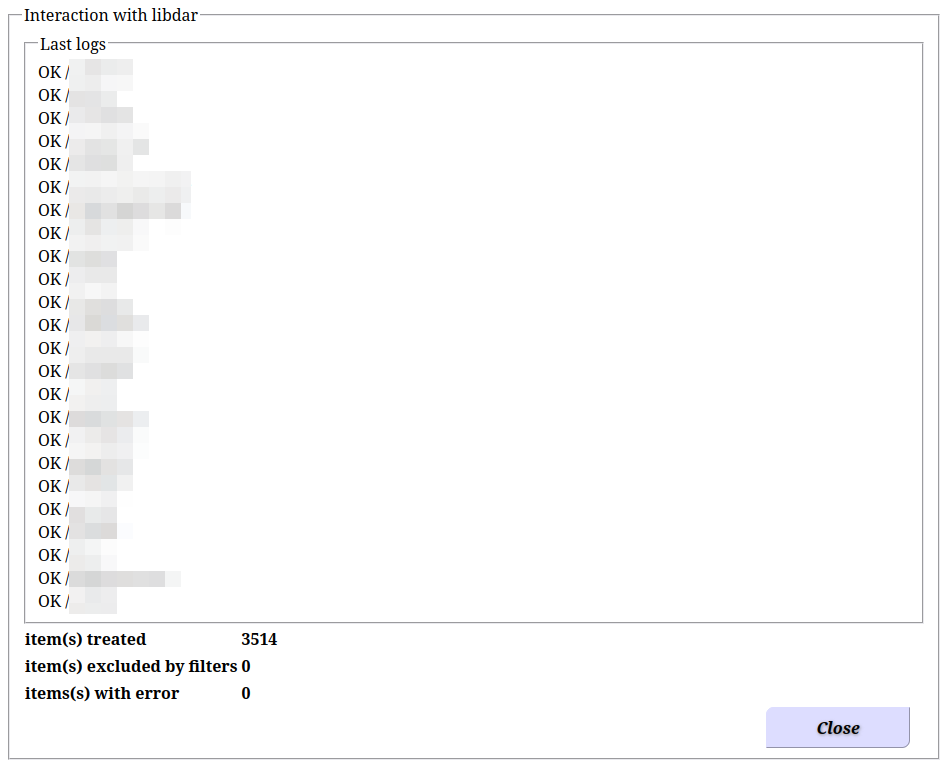
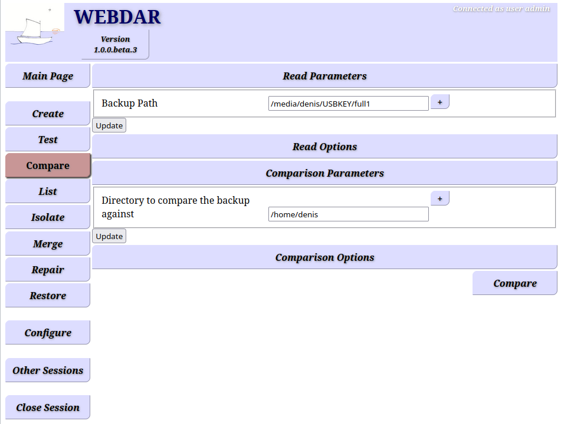
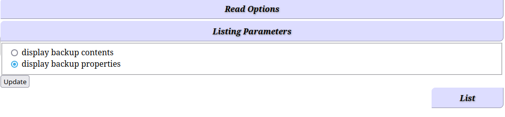
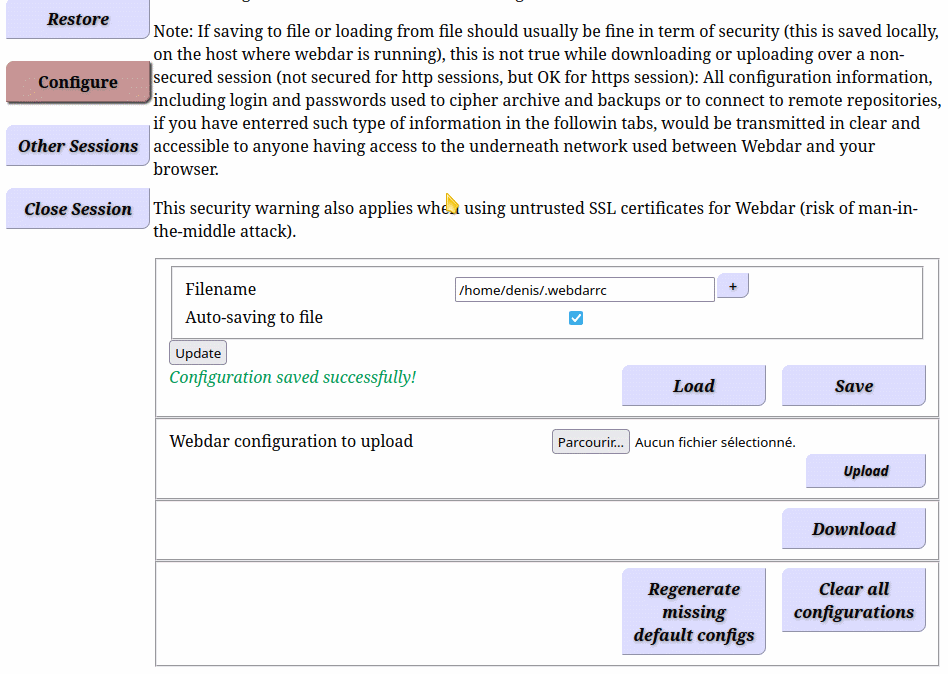

Webdar version: 1.0.x
Document revision: 2
Author: Denis Corbin
To use Webdar version 1.0.0 you need to run it from a shell, that's to say a
terminal (virtual terminal, xterm, Kconsole, ssh session or
equivalent). It is not necessary to be root (no need of
sudo,
su nor login as root) to run Webdar, if for example you
want to backup your Home directory, which is what we will
do in this tutorial. Let's rock:
> ./webdar
[thead 140511479814720][warning]
You can now point your browser at:
http://127.0.0.1:8008
and use the following to authenticate:
user name = admin
password = <a random string>
[thead 140511470872256][information] listener object: waiting for incoming connections on 127.0.0.1 port 8008
The host were you run Webdar is the place where is located the
data to backup or to restore. We will see a bit further that
this is not necessarily the place where the backup will be
stored. By default and for security reasons, only a browser
of the same host can connect to Webdar using URL displayed
in the output (http://127.0.0.1:8008)
For the browser to reside on another host than the one where
Webdar is running, you must use its -l option to specify the IP
interface(s) of the node where Webdar is running (either IPv4 or IPv6 or FQDN).
This will lead Webdar to listen on theses network interfaces
for incoming connections. You can also use the wildcard 0.0.0.0
or its equivalent [::1] in IPv6 and Webdar will listen for connection
of all network interfaces the node has (note that IPv6 address should be
enclosed in quotes to avoid the shell interpreting them as a glob expression)
Here on my host, according to the output of ifconfig command (or
the Linux specific equivalent ip a command) we can see the node
has an interface eth0 assigned to the IPv4 address
192.168.6.6:
> ifconfig
eth0: flags=4163 mtu 9000
inet 192.168.6.6 netmask 255.255.255.128 broadcast 192.168.6.127
ether XX:XX:XX:XX:XX:XX txqueuelen 1000 (Ethernet)
RX packets 21719187 bytes 103747456345 (96.6 GiB)
RX errors 0 dropped 1647533 overruns 0 frame 0
TX packets 13757737 bytes 7120233504 (6.6 GiB)
TX errors 0 dropped 0 overruns 0 carrier 0 collisions 0
lo: flags=73 mtu 65536
inet 127.0.0.1 netmask 255.0.0.0
loop txqueuelen 1000 (Boucle locale)
RX packets 189129 bytes 200891331 (191.5 MiB)
RX errors 0 dropped 0 overruns 0 frame 0
TX packets 189129 bytes 200891331 (191.5 MiB)
TX errors 0 dropped 0 overruns 0 carrier 0 collisions 0
Thus we instruct Webdar to listen on this interface only. Connecting to 127.0.0.1, the loopback address, will now fail, but we could use instead the wildcard address 0.0.0.0 or specify more IP addresses separating them by comas to have Webdar listening to more than one interface at a time.
> webdar -l 192.168.6.6
[thead 139698648119872][warning]
You can now point your browser at:
http://192.168.6.6:8008
and use the following to authenticate:
user name = admin
password = <a random string>
[thead 139698639177408][information] listener object: waiting for incoming connections on 192.168.6.6 port 8008
Then we give to our browser, possibly running on a remote host having
access to this node where Webdar is now runing,
the provided URL (http://192.168.6.6:8008).
Webdar's command-line output displayed the login and password
to provide on the browser to authenticate. If you added -v option to see
more logs, you may end up having this dynamically generated password
out of the screen, just hit CTRL-C (but no more than once per 2 seconds)
and it will show again!
Webdar is a web front-end to the libdar library. You will see libdar mentioned at diverse place, consider this part of Webdar and equivalent to it.
Congratulations! You have reached the main page of Webdar!
In this page, you can see on the left a vertical menu with the available operations (create, test,..., restore) followed by the configure menu where we will be able to store common or reusable parts of the configurations. Finally, yet below the menu Other sessions we will see now.
Webdar is ready to be multi-user but today only the admin user is available, though this user can have several sessions that can run in parallel. Note that the admin user is nothing related to a Unix account, it is just a placeholder in Webdar for a future user based feature. Webdar acts as the user and group it has been run as and has thus access only to files this user and group has access to.
The session name seen above is show at the bottom of the screen as
MirL
This is a randomly chosen string which you can change. You then
need to validate the change with the Change button:
This will always be that way: Webdar does not make use of scripts
by design. The counterpart is that you know what information you
send to Webdar and when you send it, nothing 'runs' from Webdar on
the host where is located your browser (unless, of course, when this is also the host
were Webdar is running). I let you click the Mini Tuto
button on the bottom right and check out what all this means concretely.
Back from the Mini Tuto let's now click the
Other sessions Button on the left:
You see here the list of existing sessions. From here you can create new ones and delete old ones. This is for now a door ready for future features, like a scheduler (task queuing) and maybe inter-user visibility. But let's go back to the session "My first session" we just renamed under that name, by clicking to its name:
Back to the session let's create our first backup! Select "Create" in the menu on the left:
The page now shows three parameters:
Here for the exercise we will mount an USB key and set the second
parameter to the place where the system has mounted it and use
full1 as the basename of our backup. Don't forget to
validate your change by clicking the update button:
OK, we are now ready to proceed, let's press the Create
button on the bottom right of the screen:
By default all backups are strongly ciphered. This is why Webdar asks you a password or passphrase to remember, to be to able later to decipher and read the backup. Ciphering can be disabled or be based on public/private key pair, we will have a look at the many options available with Webdar in the next chapter, for now, let's do it simple and secured: enter a password.
Note that once the password has been entered, you need to click
the update button left below
(not the Gracefully stop libdar one!). Webdar will
ask you to confirm the password and then proceed to the
backup operation if the two passwords match.
Depending on the amount of data and the speed of your disks (and here mainly the speed of the USB key), it may takes a few seconds to several minutes... for the backup to complete.
OK, once finished, the counters do not move anymore and the button
to interrupt the backup has been replaced by a Close
button:
you can close this output and get back to Webdar main page
Let's have a look at the content of your USB key. This is what you should see:
full1.001.dar
full1.001.dar.whirlpool
The first is the backup in totality. The second is a hash file, that let you quickly check that the backup file on disk is not victim of corruption during the write process.
You can check this hash ---here using the whirlpool algorithm---
using the rhash command, and you would use
md5sum -c for a md5 hash, sha1sum -c for a
sha1 hash or sha512sum -c for a sha512 hash, which are
other possible hash algorithms available with Webdar.
But before proceeding, let's eject and reinsert the USB key to flush all data from the cache, here below this is snapshot of a KDE desktop environment, but other desktops have a similar feature (you could also use mount/umount on command-line):
Once the USB key is back mounted we can check the backup hash, as shown here below using the command-line:
> cd /media/denis/USBKEY/
> rhash -c -W full1.001.dar.whirlpool
--( Verifying full1.001.dar.whirlpool )-----------------------------------------
full1.001.dar OK
--------------------------------------------------------------------------------
Everything OK
You can then remove the whirlpool file or keep it beside your backup, if you want to test the stability of the medium over time. Note that a hash does not let you repair a file, for that I would advise using Parchive a very useful program, especially for sensible medium like DVD and USB keys. Parchive will let you add parity data beside the backup files to be able to repair them in case of storage corruption, which can take place over time...
The next step you should always perform is a backup test operation! This operation will checking that all data is readable and well formatted in your backup. It does not restore anything nor it modifies the backup, but can detect things that could prevent you from relying on your backup when you would need them the most...
This step is necessary to be sure you will be able to restore later, as there are many reasons that may lead a backup to be unusable, even if Webdar will report most of the errors conditions:
So let's select the "Test" operation on the left:

We have to set the correct path to the backup, either by typing the path
and basename in the Backup Path field (and then clicking
the update button below) or better: by navigating the
directory tree clicking the '+' button on the right:
This has the advantage to transparently set the min-digits options we will explain in a second.
Once in the correct directory (the path where is mounted the USB key), we see listed the backup we were looking for, so we click on its name to select it.

Note that the content of the Backup Path field has been
filled, but it does not hold the full path+filename: only what is
called the basename we used at backup creation time (full1) is present:
A backup can be split in several files called slices. Each is a file which name starts by the basename and is followed by a number followed bye the dar extension with a dot as separator. Their number starts at 1 increasing virtually without limit:
But even when using a single sliced backup as here we still have a file following the slice format, and what we need here is the basename part only.
Now, if a backup is a set of slices or a single slice as here, you cannot do much with a slice alone, unless you are lucky and all data you need for a restoration is found in that slice. Even if not all slices are needed for a given restoration, you must not consider slices individually but keep considering a backup as the set of slices as the object Webdar is manipulating: You will never provide a slice name to Webdar but a basename.
As mentioned before, the min-digits is the number of digits the slice number (here 001) is stored. Hence here we have a min-digits set to 3. Using the '+' button instead of filling manually the path+basename, Webdar has set this parameter for us by reading the the structure of the slice name. If you decided to fill the path manually you would have to set this parameter correctly in the Read Options, something we will see at the end of this
Anyway, we can now run the test by clicking on the Test Button located on the right:
Yes, we have to give the password we have set on the backup to be able to decipher the backup and read its content...

At the end of the process, you see the Close button on
the bottom right, but before closing this page we can check before
that the counters do not report any error. This is the case here, so the
backup testing is successful.
You may have noted that the paths of the files in the backup do
not contain the /home/denis part they have on the file-system.
This is because at backup time we have restricted the backup to with
this path as root of the backup (remember the first of the
three backup parameters we set?).
Hopefully it is possible to do else in order to have the full path of files though not saving the whole file-system! We will see that when we will play with Path Filters below.
This is one step further the backup testing: not only here we read the backup content, but we compare it with the file-system. Of course if your file-system has changed since the backup was done, you will see differences reported.
In terms of use, this operation is very similar with the testing operations, there is just an additional parameter to set, which is the path of the file-system to compare with. I let you play alone with this option, as there is no difficulty here.
Who does not want to know what's in a backup?
Easy! just click the List menu on the left,
The backup to read should already be set, taken from the Test
and Compare operations we just performed. The other parameter
is just set for what we need: display backup contents. We keep
the Read Options to their default for now so we just to click
on the List button located on the right...
Note that the root of the file-system is always ROOT inside
a backup. It is substituted by the parameter you give for file-system related
operations, like during the comparison we have just played with.
Same thing at restoration time, you will be asked to provide a path where
to restore the data. But you could also use the in-place path
stored in the backup. This in-place path is
the path that was used as file-system root at backup time,
(/home/denis in our case), it is stored in the backup.
Let's close this window and check the value of the in-place path. For that we just have to change the Listing Parameter as show here:

Then click the List button on the right:
You can see the in-place path value as the last entry of the first table. Also check out the other parameters for your curiosity or information.
So far we have been using defaults options for all parameters.
These are selected for the best security and most common usage for
the backup of a personal computer. But they can be changed easily,
either on-fly for an single operation or recorded under
a name for long term and reuse, by mean of the Configure
menu on the left. This chapter has this objective to explain how to
use options in these two ways.
Let's revisit the backup we did to see how to store the same data (our
home directory), but having the path including the /home/denis part.
First replace /home/denis we had set as root of the filesystem to backup
(first parameter) by / and click the update
button below to validate the change:
We now have to tell Webdar to not save everything under /, but
only what's located in the /home/denis directory. For that,
Let's click on the Creation options bar:
We see this option to be set to from a configuration named default.
This is a predefined configuration we will Edit(button on
the right). Editing this way a configuration does not modify it, but
creates unnamed and so-called on-fly copy of it. We can still
save such on-fly under a name but it will be a new configuration
with a new name. So no worries you won't break anything! Click the Edit
button on the right:
Note first that the name default has been replaced by
---- manual config ---- which is a synonym of on-fly configuration.
We are thus currently editing a new configuration that
has no name but is a copy of the named configuration we edited. Such
on-fly configuration can be used without being saved under a name. It will
stay available at this place while Webdar is running, but will be lost
if you stop or restart it.
Now, what we are looking for our backup configuration is the
Path based filtering bar. Click on it to open this part
of the configuration:
Pay attention! We are in front of a nested on-fly configuration!
The whole part under the Path based filtering is also an
on-fly configuration (see the ---- manual config ---- showing at
the top of that section).
OK, back to our objective, let's Add a new mask selecting a Path expression mask:
For the sake of completeness, the available options are for:
But let's zoom on the path expression for now. You need first to click
the update button as usually in Webdar for changes to fly to Webdar:
We can now fill the Concerned path with /home/denis.
but for flexibility and reuse in other context, better
always using a relative path home/denis. This path will be prepend
by path of the filesystem root we have chosen for the backup creation
operation (here we chose /). The other parameters are left
as is (Mask Type and Case Sensitive), so we can
click again the update button and see in bold how the mask
now displays what it does: a file will be
involved if... [its] path is or is a subdir of /home/denis (case sensitive):
Let's go back to the backup parameters and change the backup name to full2
then click the update button:
Then just run the backup creation process by clicking the Create
button:
As seen previously we will get a new single sliced backup having for
slice named full2.001.dar.
Now check that the content contains as expected the full path,
using either the Test operation or as show below using
the List operation:
Now let's get back to our on-fly configuration in the Path based Filtering.
We will save it under the name my home dir so we will be able to reuse it
later and keep it available across Webdar restarts:
Then click the Save as button to proceed:
You now see that the whole configuration has been replaced by
the my home dir label in the drop down list. We have
made a named configuration from an on-fly one.
You can still Edit
it, but it will become a new on-fly configuration. You can also
select the Manuel config menu to start from scratch a new
configuration on the right, this has the same effect as clicking the Clear
button when editing an on-fly configuration.
But if you want to modify this named my home dir
configuration, we have to go to the Configuration Menu.
This is the topic of the next chapter.
So we select the Configure Menu on the left:
OK, this page is a quite rich, I admit. It contains a second level made of tabs displayed on the top of the page, located beside the left handed menu.
We will get back later to this Global Settings tab, currently
selected, it drives how and when all options found in all other tabs are saved.
As you see, each other tab materialize the different configuration
categories available in Webdar. Each category has its own name space,
so you may have two configurations of same name if they are in different tabs.
The first category tab, is the Repository Options we will look at in detail for FTP
and SFTP remote storage further in this tutorial.
For now, we just want to modify the Path filters we created, thus
select that tab:
In the middle of the page, you see the same configuration
structure we had found under the Path Base Filtering of the
Create Options. On the right, you see a radio button list
with only one choice for now: it contains my home dir
configuration we created from an on-fly configuration. Let's
select this option, then click the Load selected button
just below:
Now you see loaded the configuration we did. Also note that the
<ROOT> appeared in place of the / we had,
in the bold description of what the mask does.
This will be substituted at operation time and gives you more flexibility
to reuse this path filter configuration than having set an absolute
path in place of home/denis.
Note also, at the bottom of the page the box with the configuration name
and the Save/Save as button.
So we can modify the form, add other mask and update the form
with the update button when needed. In the snapshot below
we have changed the logic from AND to OR and
added another path expression to include an external mounted disk in
the backup:
At this stage (assuming you have clicked the update
button) the configuration is not only in your browser but also now known
by Webdar, however it is not save and the my home dir
configuration is still the same. Below in red you see the warning
Configuration not saved. To save it and have it replacing the old
definition, click the Save/Save as
button and see the red warning vanishing.
This will update the configuration at every place where it has
been used. For example, we can go back to the Create
menu, go down to the Path base Filtering options and
if my home dir is still selected click the Edit
button and see the new definition showing.
Now, if you remember well, I warned you about nested configuration: we
were opening the Create Options and clicked on the Edit button while
the selected configuration was set to default. This default
configuration is of category Create Options let's select
this tab in the Configure page:
As we did before, select on the right the radio button default
and click the Load selected button right below.
What we will do now is to change the default configuration for
backup creation, in order for our filter my home dir to be set
automatically in the future (even if you stop and restart Webdar).
Once the default configuration is loaded, edit the
Path base filtering options and select
the my home dir sub-configuration:
Once set, don't forget to save this new definition of the default
configuration by clicking the Save/Save as button at the
bottom for the red warning vanishes:
You may be alarmed about the fact we have changed a default
configuration, while we should have better saved it under another name
just replacing the name default by something else before clicking
the Save/Save as button. No worries let's go to the
Global settings tab...
...and scroll down the page to its bottom:

See the large button Regenerate missing defaults configs button?
We can click on it right now, it will not reset the
default configuration for the Creation Options
we modified, because no configuration of that name in that category is missing.
But you guessed, if we save it under another name, then load and delete the
default one, clicking on this button will then regenerate this
missing default configuration. So we will have back the original
default and the one we have changed under a non-default name:
The advantage of modifying the default configuration
is that each time you restart Webdar, you will have all set for
your particular context, like filters (Path Based, but also Named based),
log level options up to the Remote repositories we will see next.
That way, you just can forget the options and focus on the operations
parameter most of the time.
In this global page, you should have see that the content of all tabs of the configure page is saved in the $HOME/.webdarrc file. You can save the whole configuration sets to another file, and load another file at will and have several sets of such configurations.
You can also upload and download the same configuration through the web session from your Web browser. But pay attention when not using secured connection (SFTP with validated certificate): Any password you would have saved in an configuration, like a password for ciphering or deciphering a backup, but also credentials for authentication to remote FTP or SFTP repository, will be contained in the configuration, and exposed to attackers that could have access to the network or nodes through which this session passes.
We skipped over the Isolate, Merge and Repair operations because the first two are advances topics and you should not need them often, while the third --- if you test your backups right after backing them up --- should not be needed to you, though the repairing operation is quite simple
The Restore operation is also simple, as simple as the
Create one we saw at the beginning. Let's leverage
this simplicity to see how to store backup on a remote server.
We will replace our USB key by an SFTP server. Let's go to the
Repository Options tab of the Configure Menu
to instruct Webdar where to drop and fetch the backups:
First, let's have a look at the default configuration: Select the default
radio button on the right and click the Load selected button.
You should see almost the same page as the cleared one that was showed
initially (compare with the snapshot above):
The differences are:
default configuration that is
selected, any change we do and save will replace the named default
repository configuration, which is used in all operations (create,
test, compare, ...), unless you change it there.
/tmp
For our initial backup, we could have replaced the landing path
of the default repository configuration by /media/Denis/USBKEY.
Doing that way, anytime we do a new backup,
the path to store the backup would have be already be set. This would have
been pretty convenient, right?
About the checkbox now: If some backup path and basename is already filled for an operation and you change of repository, the landing path will not replace the content unless you check the box.
OK, we can change the default configuration of
Repository Options category to point to a SFTP server,
this will have impact for all operations default configuration,
this is what we have done
for the Path Filtering of the create option. But let's do something
different this time: First click the Clear button located on the right:
The default configuration has not been modified and
the form that now shows has been cleared to its default.
Suppose we have access to /dar-check/Backups directory on an
remote SFTP server, so we setup the landing path accordingly, we will
also check the box above and change the repository type to SFTP. To
validate these three changes we click on the Apply Changes
button:
We can now fill the new fields that appeared:
Check remote hosts from the known-host file
is checked, this is important for security
Of course we click the Apply changes to
send the information to Webdar:
If the configuration is now know by Webdar after we have clicked
Apply changed It has not yet received a name nor is
saved, let's do that in the bottom form where shows the red warning
to make it vanishing:
We seen that the red warning has vanished, but also a new item in the configuration list on the right, and the one which is selected is that one, we just created.
In the configuration above, we have provided a password. It is possible not to provide credential for authentication here. The consequence is that during the operation (backup for example) dar will interactively ask you to give the password to access the SFTP server. This is a matter of choice.
Well, now the configuration is done and saved, but it is not yet used
anywhere. To fix that, we could make use
of an on-fly configuration derived from the default
restore operation in which we would have changed the repository from
default (remember nested configuration?) to our
new named dar-check on Jupiterconfiguration.
Be we will do else for the demo. As our plan is to proceed to
a restoration, We will modify the named default restoration operation.
Let's open the Restore Options (the last tab):
What that!? There is no repository options???
Yes! This is because the restoration is performed in two steps:
So we have rather to edit named default
option of the Read Options tab:
This option set is available for any operation that requires a backup to be read:
As usual now, we select the default configuration, click the
Load selected button and open the Backup Location
inside the configuration form:
We see here that the backup location refers to the named default
repository. We just have to replace it by the SFTP configuration we have
created previously:
Once done have to send the change to Webdar clicking the update button
and then the Save/Save as for the red warning to vanish:
We mentioned the min-digits when performing the testing operation
earlier in this tutorial. You will find this option in the
Reading options here. This is where we should have to
set or modify it if we entered manually the path + basename of an archive
to read without the help of the '+' button and
navigation popup it triggers. There is an equivalent min-digits
field for the Create options, Merge options and
Isolate options.
OK, we are good to go to jump to the Restore of the left handed menu:
As we can see, the Backup Path is already filled with
what we specified as landing path, so we just have to click the +
button on the right:
It will set the min-digits accordingly to the backup we will select:
We can see the backup that was stored on the USB key (I have
transferred it from there to the SFTP server. Of course, I let you
link the dots and imagine we have used this same SFTP repository at
backup time). Let's select the full1.001.dar slice and click the
Select Button.
Doing that way the min-digits has been set to 3, and we see also
the expected Backup path in the remote SFTP repository
updated with the basename of the backup.
Restoring the whole backup is simple, just click the Restore
Button.
Here the target is explicitly /home/denis which was the
root path used at backup time. We can decide to restore elsewhere of
course. We can also leverage
the in-place path that has been stored in the backup:
For that we have to edit the Restoration Options as we
did for other configuration category earlier in this tutorial, then
check the first checkbox
Ignore the provided root directory above and use instead the in-place directory:
Of course, as next step we will click the Update
button. But it is not necessary to fill a name and click the Save As
button, here we use an on-fly configuration. If you click back on the
Restoration Parameters tab, you will see a warning
showing about the in-place path being used:
So you guess the next step is to press the Restore button
on the right bottom of the page to proceed to the full restoration
But what if instead of restoring the whole backup we would like to restore only a single file and moreover having it restored in a given directory without all the sub-directories leading to it?
For that:
We will remove the in-place option we just used for the previous demo,
We will Add a Path base filtering for that file only (this file path + name is
Documents/Genealogie/Enregistrement_Centenaire/transcription_centenaire.rtf)
As there will be a lot of file *not* restored we will disable the display of skipped file to focus on what is restored:
And last, we will unset the restoration of the directory structure
We will also change the target directory where to restore this
file to /tmp (This is probably not a good place to restore personal data, but this is a demo).
We can now click the bottom right Restore Button to proceed:
Yes, the backup is ciphered... so we enter the password of the backup. Note that if we had not set a the authentication credentials in the SFTP configuration we save in Webdar before that password, Webdar would have asked for the password to authenticate to the server, at least the first time we open the SFTP server.
The counter at the bottom of the page show one file restored, as
expected, and from the log above we can see the file's data being
restored. Though its Extended Attributes (which here are related to NFS v4
as the file was stored on the filesystem at backup time) are not
supported on the local filesystem in /tmp which is an ext4 filesystem.
Though we can compare with diff that the file is identical to the one that has been saved:
> diff -s /tmp/transcription_centenaire.rtf /home/denis/Documents/Genealogie/Enregistrement_Centenaire/transcription_centenaire.rtf
Files /tmp/transcription_centenaire.rtf and /home/denis/Documents/Genealogie/Enregistrement_Centenaire/transcription_centenaire.rtf
are identical
>
Webdar can be used completely locally to a given computer, this is even the default: the browser runs on the same node as Webdar and connect through the loopback interface (127.0.0.1 or ::1) and the backup are stored locally (USB key, disk...).
But when it comes to make distributed functioning, where the browser sits on one node, different from the one where Webdar is running and the data stored on the third different node or NAS, there are two things to consider:
If the underlying network in unsecured (public Wifi, Internet, corporate network you don't trust ...) the HTTP protocol is not enough. Where from the HTTPS (Secured HTTP).
HTTPS is broadly used and establish the trust between the browser and the web server (here Webdar) by mean of an intermediate Certificate Authority (CA) both ends trust. This is known as a PKI for Public Key Infrastructure. IT pro know well how to set this up, but for homeland this is overkill.
You could use self-signed certificate, this provide ciphering of the data but you are not sure to connect to the correct Webdar server, or said in other words you could connect indirectly to the server you expect but in the middle some could eavesdrop the communication, the so called man-in-the-middle attack (MITM in the following).
You can reduce the risk of MITM attack still using a self-signed certificate. This is the objective of this chapter:
First, create a self signed certificate and compute its fingerprint
> openssl req -x509 -nodes -days 365 -newkey rsa:2048 -keyout mycert.pem -out mycert.pem
# this creates a 1 year valid certificate stored in the file mycert.pem. As it is self signed
# the certificate and the key pair to cipher the HTTPS session are enclosed in the same file
> openssl x509 -in mycert.pem -fingerprint -noout
SHA1 Fingerprint=93:1A:0A:48:B0:B8:FE:FE:1E:DF:CA:AA:4D:D4:60:AB:45:34:20:06
# this previous command shows the SHA1 hash of the key/certificate
> openssl x509 -in mycert.pem -fingerprint -sha256 -noout
sha256 Fingerprint=BE:15:3E:07:4B:1E:F1:D7:39:A1:99:87:16:F6:2D:8F:C9:9A:1D:D3:26:8A:5C:92:9B:DC:43:01:DC:F6:BA:1A
# this is here the SHA256 hash that is shown
Now we can run Webdar with this certificate and key pair
> webdar -l 0.0.0.0 -C mycert.pem -K mycert.pem
[thead 140401792813632][information] A new SSL context has been created
[thead 140401792813632][warning]
You can now point your browser at:
https://:8008
and use the following to authenticate:
user name = admin
password =
[thead 140401783879360][information] listener object: waiting for incoming connections on 0.0.0.0 port 8008
Now when connecting from our web Browser to Webdar, of course we will get a warning about this certificate to be unsecured, because it is not certified but any CA the browser knows:
but we can compare the SHA1 and/or SHA256 hash
(also known as fingerprint) of the certificate received by the browser with
the one we have computed above. For that, click the Advanced... white button
(OK my browser, here Firefox, is French localized, but you should find the same
disposition for other languages):
Then click on the hyperlink "Display the certificate", see the mouse pointer below:
Then scroll down the the fingerprint part and compare the SHA1 and/or SHA256 fingerprints of the certificate received by the browser with the one we computed on the node where Webdar is running:
If they match as they do here, you are pretty sure your session is secured and you can let you browser accepting this certificate. You will not be bothered by your browser until your certificate expires or you change of IP/hostname for Webdar, or until someone attempts to intercepts your session with a MITM attack, in which case you should not accept the certificate nor connect to Webdar but investigate the root cause of this problem and fix this possible security breach. Probably generating a new self-signed certificate and comparing the hash will let you "solve" or workaround this issue (?)
FTP is not secured, use SFTP to send or fetch your backups to a remote node.
SFTP is a subsystem of SSH and you must that relies on public/private key pair from the server authentication and either password or also key pair for user authentication by the server.
The first time you connect in SSH or SFTP to a server, it will show you server key-pair fingerprints and you should not accept them lightly, but rather compare them to the one of the server.
The SSH/SFTP server fingerprint can be obtained and provided by the server admin running this command:
for x in /etc/ssh/*.pub ; do ssh-keygen -l -f "$x" ; done
As a server usually have several keys of different type, you may have sever fingerprints. If one of them matches fingerprint showed when you first connect to that server, you are good to accept it and connect to that server. Else there is a security issue and you put at risk you data.